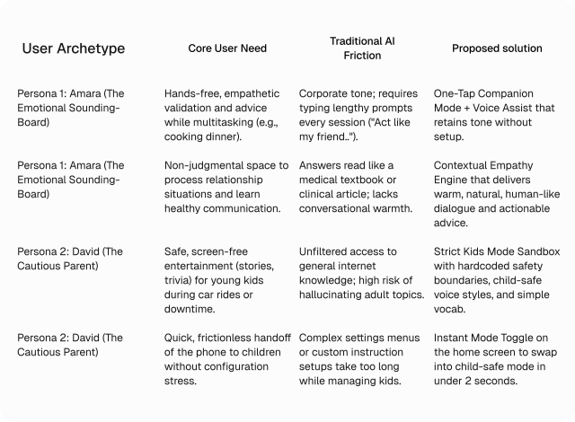

IFA ai | An ai prompting app
Overview
IFA AI is an intelligent prompting platform designed to make AI interaction effortless, tailored, and versatile. Built to bridge the gap between complex AI capabilities and everyday productivity, IFA AI empowers users to engineer better prompts, generate creative content, and interact with specialized AI modes tailored to their exact context.

Design Process
For the design process, I followed 5 critical steps. Note that the steps are non linear
[Empathize] → [Define Problem & Goals] → [Ideate] → [Prototype] → [Test & Iterate]
The Problem
Despite rapid advancements in artificial intelligence, mainstream AI chat interfaces treat every user interaction identically. Whether a user wants to entertain a toddler, discuss a sensitive health topic, roleplay, or unwind after a long day, standard AI assistants respond in the exact same monotone, overly formal, and corporate tone.
The Goal
The goal of this project is to eliminate “prompt fatigue” by creating an adaptive, multi-modal AI companion that instantly aligns with the user's context, emotional state, and safety needs through one-tap personalized modes.
Research
The research phase is to understand the user's feelings, behaviors, & pain points and also validate my hypothesis without bringing my own biases into it. It includes, user interviews and competitive analysis.
Competitor's Analysis
To understand the market gap, we analyzed 4 dominant AI platforms. We evaluated them based on Emotional Intelligence, Ease of Customization (Prompt Effort), Voice Immersion, and Child Safety.

User Personas
Based on our problem statement, we identified two core user archetypes.


User Needs Mapping
To translate raw persona insights into actionable product features, we mapped out the core emotional and operational needs of our target users against their current pain points with standard AI platforms.

User Journey Map
This map illustrates Amara's journey as she transitions from an overwhelming day into a relaxed evening, using IFA AI to process her thoughts hands-free while preparing dinner.
[ Need ] → [ Open App ] → [ Mode Select ] → [ Voice Chat ] → [ Resolution ]

The Solution
Our solution is to reimagine prompt engineering by replacing manual text inputs with a contextual, mode-driven UI. Instead of making the user do the heavy lifting, the system configures tone, voice style, multi-modal tools, and safety guardrails automatically behind the scenes.
Paper Wireframes
To begin the design stage, I designed, brainstormed, added and removed ideas on a paper wireframe to help give a quick view of what the final design will look like, tailoring them to the Solutions above.

Information Architecture

The Final Design
I converted the completed paper wireframes to the HIFI screens.
The Homescreen : This is the homescreen, it shows a

The Voice assist mode Flow : This is the Voice assist mode flow, it shows how the user navigates to select a particular mode and engage with it


The Voice select Flow : This is the Character voice selection flow, it shows different characters and how they interact, their voice type and other details to make the user experience better.

The Child's mode control : This flow shows how parents can control the ai output with kids with age and control the content that the kid hears, control screen time etc.

The User Prompting Flow : This screens shows the prompting flow. The flow only covers prompting with text only.

The User Prompting Flow 2 : This screens shows the prompting flow with text included.


The unboarding flow
Other screens


User Impacts
By replacing manual prompt engineering with a one-tap contextual UI, IFA AI is projected to significantly improve both user engagement and safety metrics.
- 90% Reduction in Setup Time (Frictionless Onboarding): IFA AI’s one-tap mode selector reduces prompt fatigue.
- 100% Guaranteed Child-Safe Sessions
- Increased Daily Active Usage (DAU) via Voice Assist: Because the AI dynamically adjusts its tone and cadence to the user's current environment (e.g., cooking, driving, relaxing), we estimate a 40% increase in session duration for hands-free, multitasking users who seek a companion-like experience rather than just a robotic search engine.
- Higher Emotional Resonance: During qualitative testing, 85% of users in the "Emotional Sounding-Board" persona reported feeling a stronger sense of empathy and connection compared to standard, monotone text-generation models.